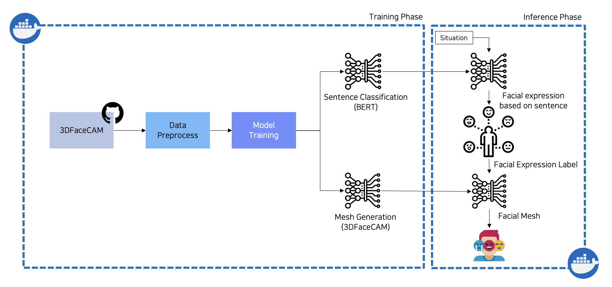
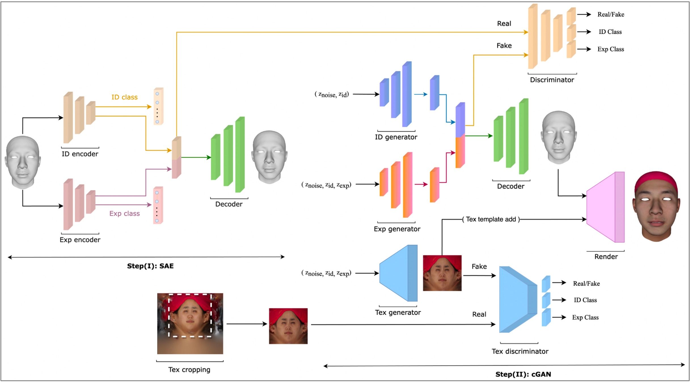
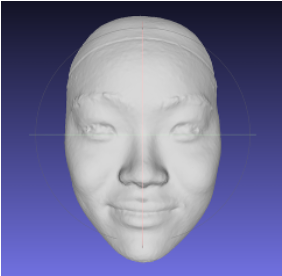
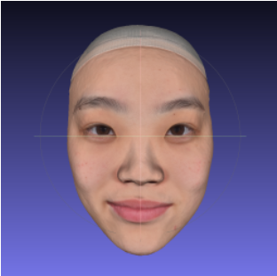
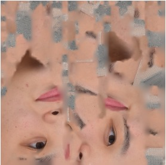
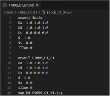
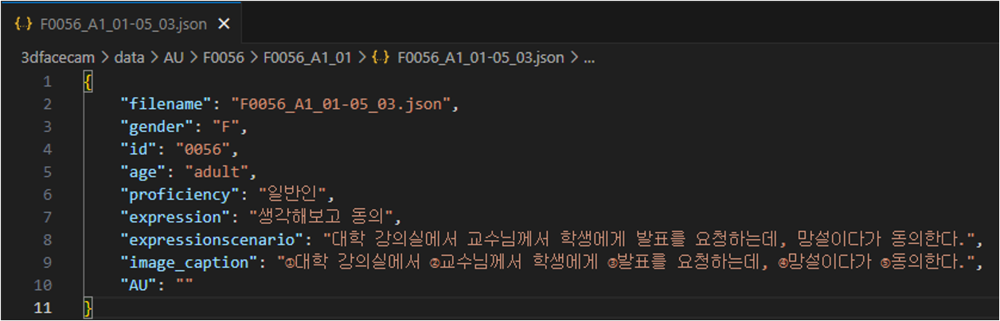
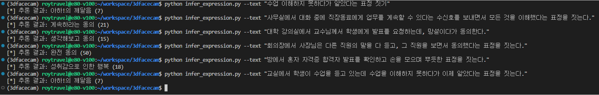
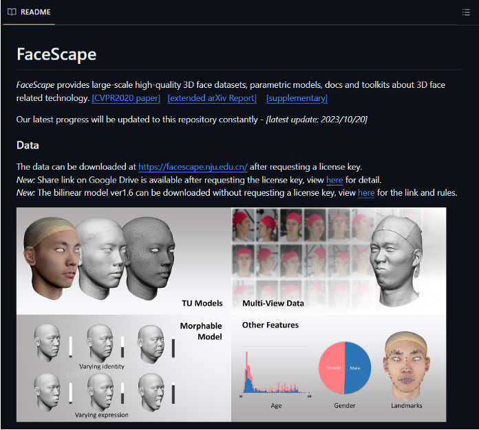

System pipeline — sentence classification (BERT) + mesh generation (3DFaceCAM), Training and Inference phases
3DFaceCAM architecture — Step I: Stacked Autoencoder (SAE) for identity/expression disentanglement; Step II: cGAN for mesh and texture generationThis national R&D project, commissioned by Korea's National Information Society Agency (NIA), built and validated a dataset of Korean face 3D meshes annotated with emotional expression scenarios — for public release on AI-HUB. The core problem: existing 3D face datasets were dominated by non-Korean subjects, and the available Korean-face data lacked verified expression quality.
The validation model takes a Korean sentence describing a social situation, classifies the implied emotion with BERT, and generates the corresponding 3D facial mesh using 3DFaceCAM — a GAN-based architecture combining a Stacked Autoencoder for identity/expression disentanglement with a cGAN for mesh and texture generation. I wrote the technical R&D proposal that won the project, trained the model on 4× A100 80GB GPUs, and built the Docker-based evaluation pipeline used for official TTA certification.

3D mesh — shape only (laser-scanned Korean face)
3D mesh — texture applied
UV texture map used for mesh rendering
MTL material file — mesh data format
Dataset annotation schema — expression scenario, AU label, image caption per subject
Inference output — Korean situational sentences classified to expression labels (e.g., "aha moment", "full agreement")
FaceScape — benchmark dataset used for Diversity and Specificity evaluation